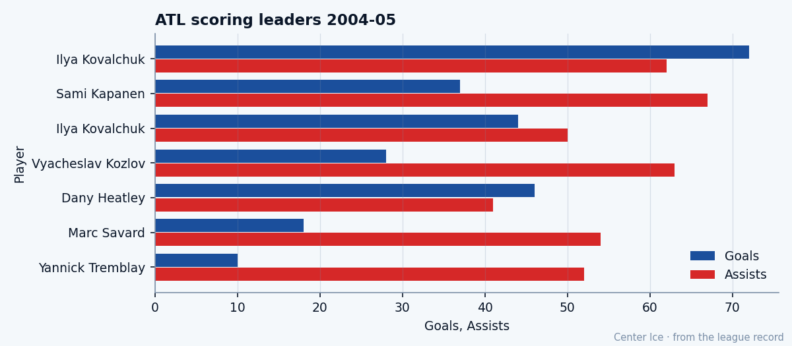

First Russian, First Overall: the education of Ilya Kovalchuk
Tver to Spartak to Atlanta to four 99s and $1.10M, scoring 22.6 percent of a team that wins 19
 Tomáš VránaProfile writer · The Sweater
Tomáš VránaProfile writer · The SweaterThe first thing you notice on  Ilya Kovalchuk91's sheet is the top row. Acceleration 99. Agility 99. Shot power 99. Speed 99. Four attributes at the maximum grade the Bureau can print, on a 21-year-old left winger who makes $1.10M and plays for a team with 19 wins.
Ilya Kovalchuk91's sheet is the top row. Acceleration 99. Agility 99. Shot power 99. Speed 99. Four attributes at the maximum grade the Bureau can print, on a 21-year-old left winger who makes $1.10M and plays for a team with 19 wins.
He was born in Tver, a city on the Volga between Moscow and St. Petersburg, in April 1983. He played peewee hockey in Quebec at the international tournament in 1997, for Spartak Moscow's youth squad. Two seasons in the Vysshaya Liga with Spartak's senior club, then the 2001 draft, and the  Atlanta Thrashers Thrashers took him first overall. The first Russian ever picked at that spot in the NHL.
Atlanta Thrashers Thrashers took him first overall. The first Russian ever picked at that spot in the NHL.
He wears 17 as a tribute to Valeri Kharlamov, the Soviet winger who was a superstar in the 1970s. The number is the only thing Tver gave him that he still carries.
The record says he peaked already
His second NHL season produced 38 goals and 67 points. Last season he scored 72 goals and 134 points in 82 games. This season he has 44 goals and 94 points in 54 games, a pace of 143. He is on the Bureau's Development Index at +5, which reads 5 above his base grade of 89 and puts his overall at 92.
His potential is 86.
The Book says the ceiling is below where he stands. At 21, with four 99s and 94 points through 54 games, the Bureau has him 6 grades past the top of his arc. He will not get better by the Book's math. A team has to figure out what to do with a player who is already what he is going to be, at $1.10M, with one year left on a deal that expires in July.
What $1.10M buys in the Southeast
The Bureau's Contract Ledger has him at $1.10M. His 94 points make that $11,702 per point. The team around him scores 195 goals in 54 games. He accounts for 22.6 percent of them.

His next man on the club is  Dany Heatley89, the 2000 second overall, at 87 points in 51 games. Heatley's overall is 90. Their combined production is 181 points, and the Thrashers sit last in the Southeast at 19-26-2, 54 points, 15 behind
Dany Heatley89, the 2000 second overall, at 87 points in 51 games. Heatley's overall is 90. Their combined production is 181 points, and the Thrashers sit last in the Southeast at 19-26-2, 54 points, 15 behind  Tampa Bay Lightning and
Tampa Bay Lightning and  Washington Capitals who both have 71.
Washington Capitals who both have 71.
The room around them is thin.  Sami Kapanen81, the Finnish winger at 31, has 104 points last year and is the third-best man on the roster.
Sami Kapanen81, the Finnish winger at 31, has 104 points last year and is the third-best man on the roster.  Patrik Stefan80, the 1999 first overall, has 42 points this year and a foot injury that keeps him out until March 14. Between the top center and the top winger there is a 50-point gap.
Patrik Stefan80, the 1999 first overall, has 42 points this year and a foot injury that keeps him out until March 14. Between the top center and the top winger there is a 50-point gap.
The cold part of the sheet
The 99s get the conversation. The bottom of the sheet does not. Fighting 50. Speed under pressure 51. Injury resistance 53. Those three numbers sit 46 grades below the top of the same sheet. He takes 10 penalty minutes. He gets hit and the hits do not go back.
On a team that lets in 210 goals in 54 games, that 50 on the fighting line describes what happens to him every shift in the defensive zone. Nobody protects him because the men around him do not hit either.
The room right now
The Thrashers won three straight to start February. They beat  Ottawa Senators 3-2 on the road,
Ottawa Senators 3-2 on the road,  New Jersey Devils 2-1 on the road, and
New Jersey Devils 2-1 on the road, and  Montreal Canadiens 4-3 on the road. Three wins in five days, all away, all by one goal. Kovalchuk's morale reads 95.
Montreal Canadiens 4-3 on the road. Three wins in five days, all away, all by one goal. Kovalchuk's morale reads 95.
His contract has one year left. The trade deadline is 35 days away. The rookie draft is in June, free agency closes in July. If the Bureau's 86 potential is real, the team that signs him in July is paying for a peak that has already happened. If the 99s are real, they are paying for a 21-year-old who scores 143 points per 82 minutes.
The Bureau prints both numbers side by side: overall 92, potential 86. Kovalchuk scores 22.6 percent of his team's goals and plays for a club 15 points out of a playoff spot.